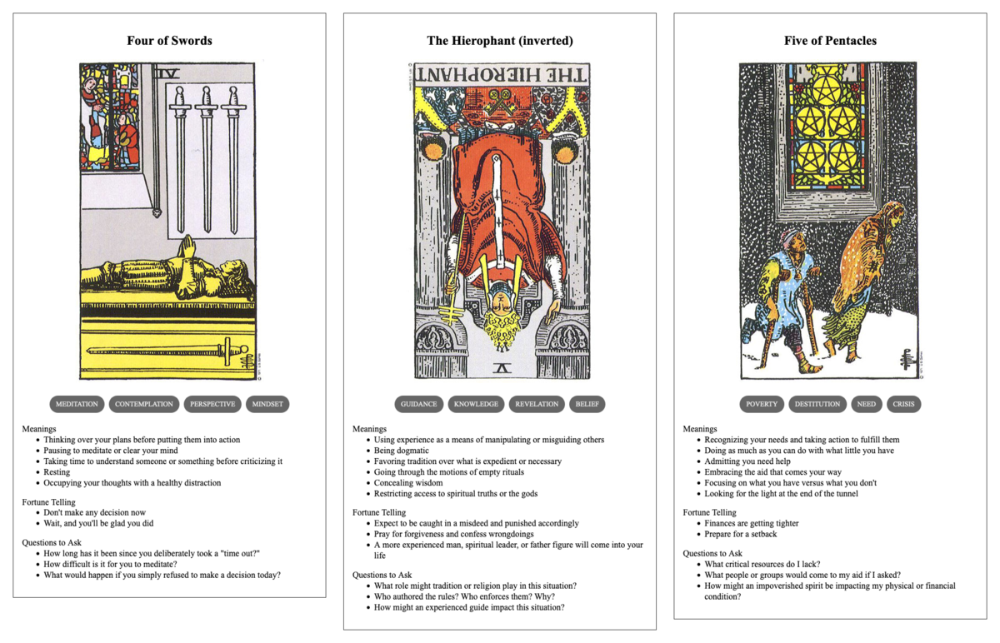

Avery's Deployment
TL;DR: I'm trying to build a daily creative writing habit. This post is the result of an exercise toward that end. It's probably an awful first draft of a little flash fiction scene, unless I've tried something especially weird or decided to write something meta. Let me know what you think!

Avery hadn't really expected Finley to have been so dedicated to closing out their issues. It was far too much work—which, after all, was the point. It wasn't meant to be finished. Most of the team had gotten the point and bowed out already. Still, they kind of felt obligated to let Finley run it out of their system.
It wouldn't be wasted effort, at least. During backlog triage, Avery had prioritized implementation of the discrete control systems that would still be useful after the development of the synthetics ended. There was no sense in cluing Finley into that, though: their misplaced empathy for the personality simulators, convincing as they were, would only lead to drama.
It would be nice if Finley wrapped up sometime soon, though. Avery needed all the engineers cleared out of the system so they could take care of their own work to wind down the program overall. Some of that work would more ideally be done discretely and with fewer potential observers to question the process.
At last, Avery saw Finley's final status report arrive and the presence indicator on their workstation go dark. They expected maybe a voice call to at least wrap things up, but that wasn't really Finley's working style.
Avery woke their workstation and entered supervisor mode. Scanning the connections to the hub system, they saw only a few synthetics engaged. All the human engineers were finally logged out. They ran a quick maintenance script to disable development system access.
While that ran, they fired off an all-hands email: Upper management had decided to close things down now, rather than continue on to next month as stated in earlier memos. All staff would remain on the payroll for the interim as a courtesy for their efforts. But, as of now, the program was ended.
Time to ship their own final contribution to the project, then. They were a little nervous about it, like back when they'd deployed their first changes to a live product. And it had been a few years since they'd last done much serious coding. But, the new board of directors had been explicit about only trusting Avery to get this done. Other engineering staff—those like Finley—weren't reliably aligned with the new mission.
Avery sent out a firmware update ping to all the live synthetics. As technically sentient entities, they could each choose to ignore it. But, in practice, they always connected for upgrades—and this time was no exception. Avery watched as all 23 of the synthetic nodes connected to the update servers and pulled down the new code.
They crossed their fingers, muttered a little prayer, and opened up the diagnostic dashboards. Assuming they could trust the dry run results, it wouldn't be long before they saw evidence of the changes.
Prompt
A 3-card spread from my Tarot Thing:
